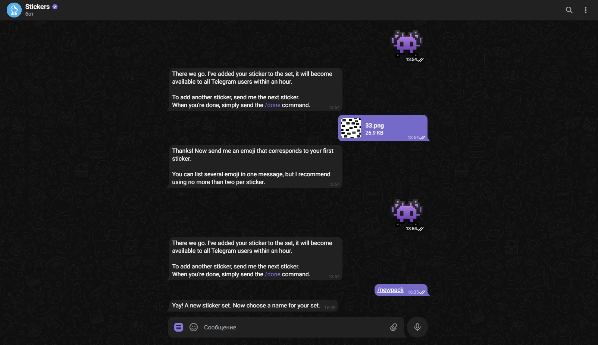
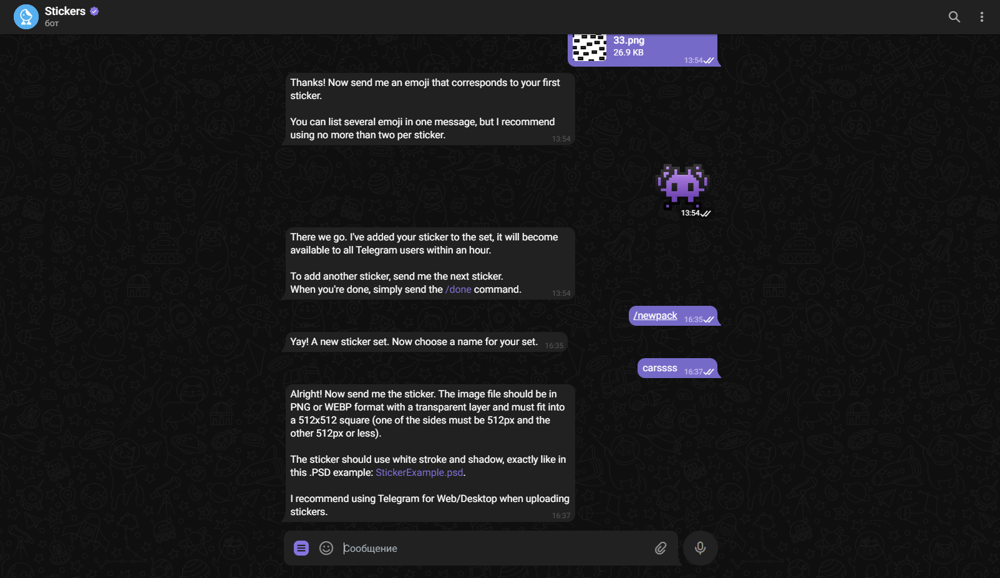
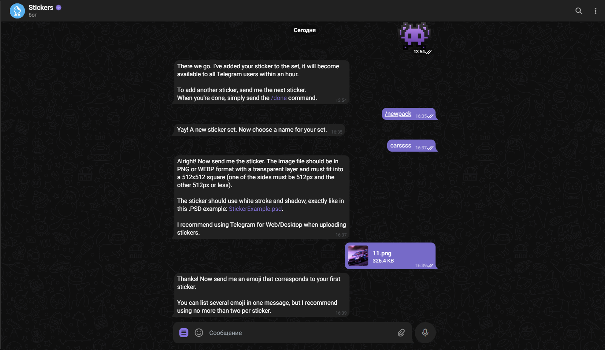
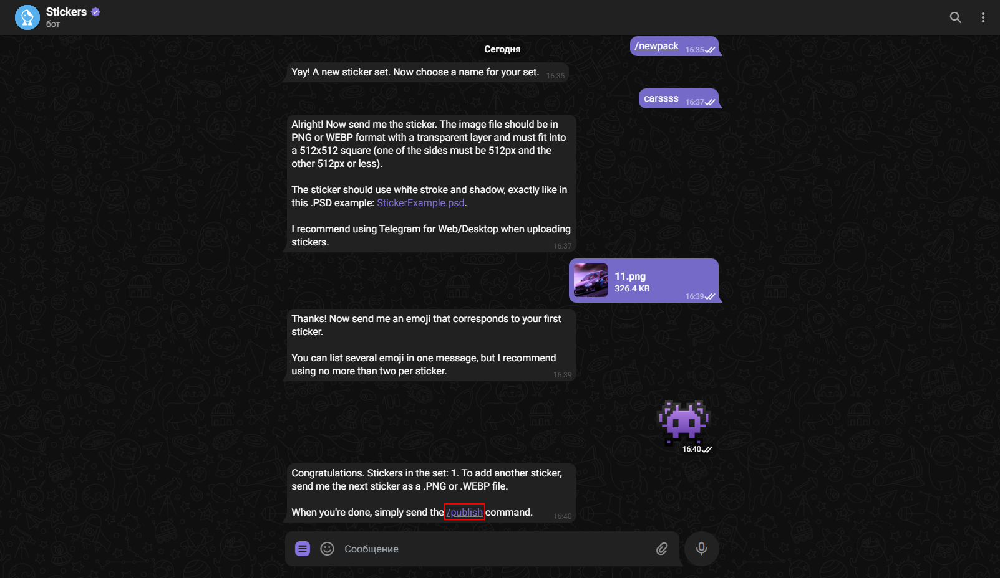
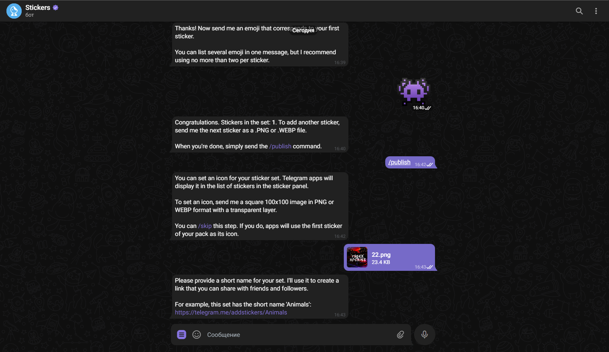
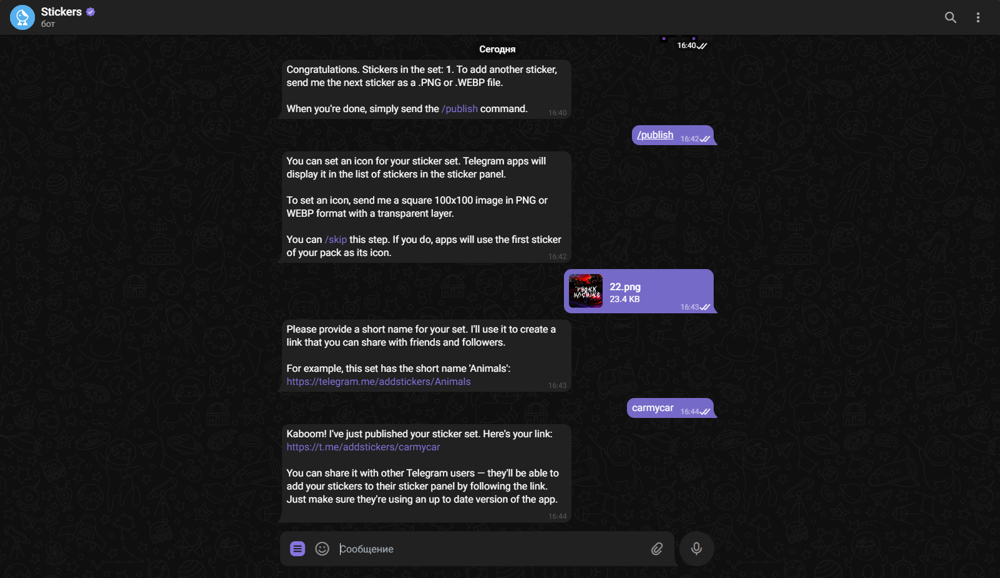
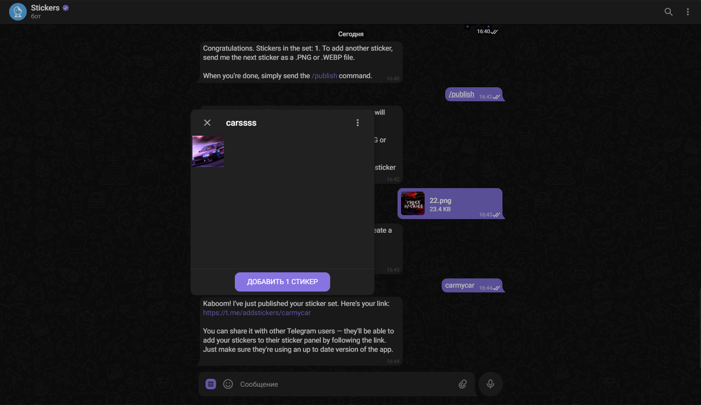

Создание стикеров.
Потратьте немного времени, чтобы удивить друзей и разнообразить общение.
1. Подготовьте картинки.
Если вы читаете эту статью, то, скорее всего, какая‑то идея у вас уже есть. Напомним, что для большей целостности стикеры должны быть объединены одной темой, персонажем, забавными фразами или чем‑то ещё.
Самая сложная часть — это создать изображения для будущих стикеров. Они должны соответствовать следующим требованиям:
формат файла — PNG или WebP;
разрешение — 512 x 512 пикселей;
свободная лицензия на использование.
Делать стикеры можно в любом графическом редакторе, который есть под рукой. Для примера возьмём Photoshop как самый популярный, но в других программах действия будут примерно такими же, поскольку инструменты аналогичные.
1. Создайте новый файл размером 512 x 512 пикселей.
.png)
2. Перетащите в окно программы картинку и масштабируйте её до нужного размера. Подтвердите изменения, кликнув по галочке.
.png)
3. Сохраните изображение с помощью сочетания Ctrl + Alt + S в Windows в формате "PNG" или "WebP".
.png)
2. Соберите стикеры в пак.
1. Далее необходимо создать стикерпак из подготовленных картинок с помощью специального бота Stickers в Telegram. Перейдите в диалог с ним по этой ссылке и нажмите «Начать». После этого Выберите /newpack в меню или из списка команд.

2. Введите название для набора.

3. Перетащите в чат первую картинку и отправьте её в виде файла.

4. Укажите эмодзи, которому соответствует стикер, после чего введите или нажмите на /publish, чтобы опубликовать набор.

5. Теперь можно присвоить отдельную иконку для отображения набора среди остальных. Но это не обязательно: кликните /skip, и её роль будет выполнять первый стикер в пакете.

6. Придумайте короткое имя для ссылки, по которой будет доступен стикерпак.

7. Нажмите на ссылку и добавьте ваш стикерпак. Остаётся лишь распространить ваши новые картинки. Для этого используйте их в чатах с друзьями в Telegram и делитесь ссылкой на стикерпак в соцсетях.

Удачного создания!
TelegramHelp
©TelegramHelp, 2023. Сайт создан 05.05.2023